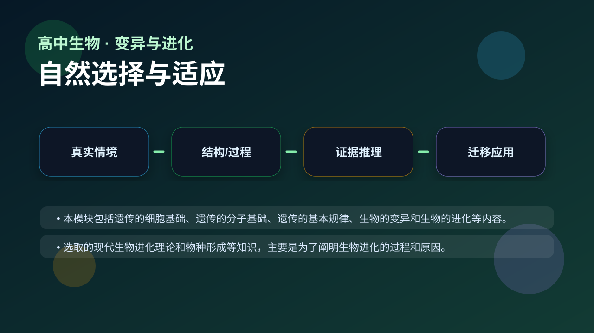
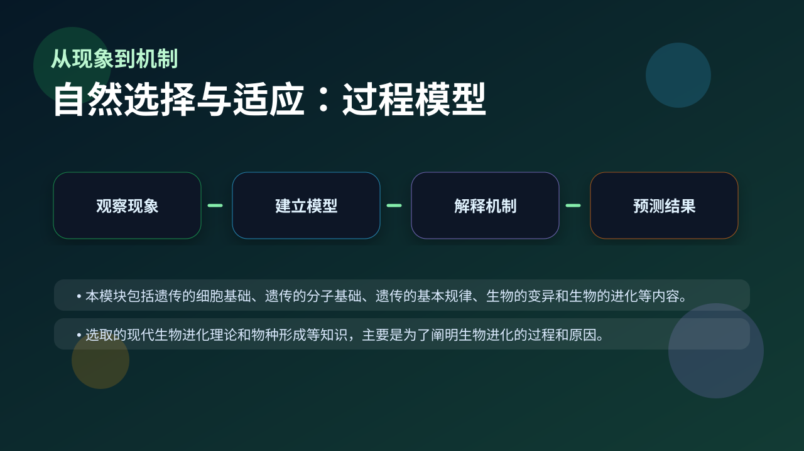
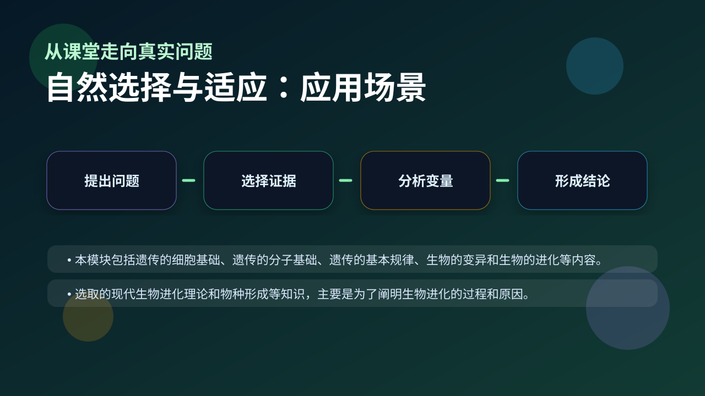

Gallery v1.0.0 · skill v7.14
个体差异怎样在环境选择下变成种群层面的改变？

已经知道：你已经会背一些生物学名词，也见过实验现象、曲线和图示。
但问题是：高中生物真正考查的是能否在新情境中说明变量、机制和证据，而不是复述一句定义。
所以学：本课把 自然选择与适应 放进一个研究员式的真实任务：先看现象，再拆机制，最后用证据完成解释。
先选一个卡点。后面的例子、互动和 AI 学伴都会围绕它给你最小提示。
选择或输入后，本课会围绕你的问题展开。
学习 自然选择与适应 前，先判断：一个合格的生物学解释，是否只要说出名词定义就够了？
现象入口：同一环境中，具有某些表型的个体更容易存活并留下后代，种群性状比例逐代改变。
机制解释：自然选择作用于个体表型，改变的是种群基因频率；适应是选择积累的结果。
证据抓手：证据来自抗药性、工业黑化、模拟种群曲线和基因频率变化。
变量线索：遗传变异、环境压力、存活率、繁殖成功率和代数。做题时先找变量，再判断机制，最后写证据。
本模块包括遗传的细胞基础、遗传的分子基础、遗传的基本规律、生物的变异和生物的进化等内容。
选取的现代生物进化理论和物种形成等知识，主要是为了阐明生物进化的过程和原因。

先描述题干现象或数据变化。
区分结构、过程、变量和层级。
用机制说明为什么会这样。
换情境预测结果并给证据。
情境：细菌抗药性不是抗生素“诱导需要”，而是已有变异在抗生素环境下被选择。
作答路径：第一句写可观察现象，第二句写本课机制，第三句写证据或变量关系。例如先说明“题干中哪个指标变化”，再说明“这个变化对应哪个结构或过程”，最后补上“为什么这个证据能支持结论”。
评分提醒：只有结论没有证据，通常只能得到识记分；能把 自然选择与适应 和变量关系连起来，才是高中生物的解释性答案。
用 PhET 观察环境压力如何改变种群中不同表型个体的比例，再讨论它和 自然选择与适应 的关系。
💡 操作提示：改变环境、捕食者或突变条件，记录种群数量曲线，判断哪些变化是个体层面，哪些是种群层面。
拖动滑块模拟 遗传变异、环境压力、存活率、繁殖成功率和代数 的改变，观察系统响应曲线。请把曲线变化翻译成 自然选择与适应 的机制解释。
拖动滑块后，解释变量如何影响结果。
说个体“为了适应而进化”是典型目的论错误。
只说“增加/减少”不够，要写清改变的是 遗传变异、环境压力、存活率、繁殖成功率和代数 中的哪一个。
没有实验现象、曲线趋势或结构证据，答案就像猜测。
判断题：只要背出 自然选择与适应 的定义，就能解决相关实验探究题。
错因诊断：如果答案只有一个名词，说明你还停留在识记层。真正的理解必须能解释“为什么”、预测“如果条件改变会怎样”，并能指出证据来自哪里。
视频用语音和动态画面回顾本课主线：问题情境 → 机制模型 → 证据判断 → 迁移应用。

解释害虫抗药性、病毒变异和保护色，都要分清变异产生与选择保留。
提交后会检查你的解释是否包含现象、机制和变量。
如果学生只说出概念名称，继续追问：题干里哪个证据最关键？这个证据对应分子、细胞、个体还是生态系统层级？如果改变 遗传变异、环境压力、存活率、繁殖成功率和代数 中的一个条件，结果会怎样？这三问能把答案从背诵推进到科学解释。
用一句话说清 自然选择与适应 的核心机制，必须包含“变量”和“结果”。
给一个实验或曲线，判断哪条证据支持你的解释。
换到健康、农业、生态或生物技术情境，设计一个可检验的问题。
下面哪一种答案最符合高中生物的科学解释要求？
学习小结：自然选择与适应 的关键不是记住一个孤立词，而是能把生命现象放进层级、机制和证据的框架中解释。下次遇到陌生题，先问：变量是什么？机制在哪里？证据支持哪一步？
自然选择是达尔文进化论的核心概念，指在自然界中，适应环境的个体更容易生存和繁殖，从而将其有利性状传递给后代。例如，长颈鹿的脖子最初长度不一，但在食物匮乏时，脖子较长的个体能吃到更高处的树叶，生存几率更高，经过多代积累形成现在的长颈特征。这一过程需要三个关键要素：变异（个体差异）、遗传（性状可传递）和选择压力（环境筛选）。工业革命时期英国桦尺蛾的黑化现象也是典型案例——原本浅色蛾子占多数，但随着树干被煤烟染黑，深色蛾子因更隐蔽而存活率上升。
适应分为结构适应（如仙人掌的刺减少水分蒸发）、行为适应（候鸟迁徙避开严寒）和生理适应（高原人血液中更多血红蛋白）。北极熊的白色毛发是典型的结构适应，既能保暖又提供伪装；而沙漠蜥蜴白天埋沙避暑则是行为适应。生理适应的例子包括某些细菌对抗生素产生耐药性——这不是个体主动改变，而是耐药基因突变体在药物环境中被选择的结果。要注意的是，适应具有相对性：同一性状在不同环境中可能有利或有害，如黑暗洞穴中的鱼类失去视力反而节省能量。
变异主要来自基因突变（DNA复制错误）、基因重组（减数分裂时的染色体交换）和基因流动（种群间迁移）。例如，人类ABO血型的差异就是由红细胞表面抗原基因的不同组合导致。突变多数有害（如镰刀型贫血症），但少数可能带来优势——如CCR5基因突变使部分人对HIV免疫。关键要理解：变异是随机的，但自然选择是定向的。英国胡椒蛾的黑色变异早在工业污染前就已存在，只是直到环境变黑才显现优势。实验室里用大肠杆菌验证抗生素耐药性进化时，也能观察到类似过程。
选择压力可来自生物因素（捕食、竞争）和非生物因素（气候、辐射）。猎豹与瞪羚的'军备竞赛'是典型的协同进化：跑得快的猎豹和更敏捷的瞪羚都被选择保留。非生物因素的例子包括加拉帕戈斯群岛地雀喙型变化——干旱时大而硬的喙更适合咬开坚硬种子。现代人类活动也成为新选择压力：城市灯光使喜欢黑暗的蜘蛛数量减少，而能利用人造光的种类增多。需注意选择压力可能相互冲突：雄孔雀华丽尾羽虽吸引天敌，但能获得更多交配机会，这种权衡叫性选择。
定向选择（如抗药细菌比例持续增加）、稳定选择（人类婴儿出生体重接近平均值最优）和分裂选择（同一区域大小喙地雀共存）是三种主要模式。定向选择的经典案例是抗生素滥用导致耐药菌株占比上升；稳定选择可见于新生儿体重——过轻或过重死亡率都较高；分裂选择则体现在非洲湖泊中慈鲷鱼的分化：深水区鱼类发展出大口型以捕食小鱼，浅水区则演化出小嘴型专吃藻类。特殊情况下还有平衡选择，如镰刀型贫血症基因在疟疾区被保留，因杂合子兼具抗疟性和较低贫血风险。
生物学中的适应度指个体传递基因到下一代的能力，并非指身体健康程度。衡量标准包括绝对适应度（后代数量）和相对适应度（与种群平均值的比较）。比如某昆虫基因型A产100卵，B产80卵，若种群平均90卵，则A的绝对适应度为100，相对适应度为100/90≈1.11。旅鼠的周期性数量暴发说明高适应度可能随时间变化——食物充足时多产是优势，但资源耗尽时反而导致种群崩溃。现代研究还引入包含适应度概念，即个体帮助亲属繁殖时也间接传递了自身基因，这解释了蜜蜂工蜂不育仍进化出劳动行为的原因。
人工选择是人类按需求定向筛选性状（如奶牛产奶量），其选择强度和方向远超自然过程。狗从狼驯化而来，通过人为保留温顺、护主等特征，仅用1.5万年就产生300余品种，而自然演化需要更长时间。但两者本质机制相同：京都大学实验证明，人工选择野生果蝇40代就能使其发育周期缩短20%。关键区别在于：自然选择没有预见性，仅对当前环境有效；而人工选择可针对未来需求。转基因作物争议部分源于此——人为基因改造可能跳过自然选择的'测试环节'，导致生态风险。
现代综合进化论整合了遗传学（孟德尔定律）和古生物学证据，强调种群基因频率变化是进化本质。中性学说补充指出：多数分子变异不受选择影响（如人类与黑猩猩的细胞色素c差异）。表观遗传学发现环境可引发可遗传的基因表达改变——二战荷兰饥荒中孕妇所生子女更易肥胖，这种效应持续三代。当前研究热点包括：进化发育生物学（Evo-Devo）揭示同源基因如何导致形态差异，如蝙蝠翅膀与小鼠前肢共享Bmp2基因；以及宏进化研究物种形成速率，如寒武纪生命大爆发期间的快速分化。
['为什么长颈鹿的脖子会变长？用你的原理解释', '如果环境突然变化，所有生物都能快速适应吗？为什么？', "你听说过'超级细菌'吗？它们是如何产生的？"]
['对比工业黑化前后的桦尺蛾，说明自然选择三要素如何体现', '分析北极熊白色毛发在冰川融化环境中的适应度变化', '设计实验验证光照强度对昆虫体色选择的影响']
常见误区包括：认为生物会'主动'适应环境（实际是变异被选择）、混淆个体适应与种群进化（进化是群体基因频率变化）、忽视时间尺度（适应需多代积累）。错因多源于拟人化思维和短期观察局限。诊断时需强调：变异先于环境变化存在，且有利性状不一定在当代显现优势，如隐性基因的保留。
迁移挑战：分析城市热岛效应可能引发的生物适应性变化。要求：1)预测3种可能被选择的性状 2)解释这些性状如何提高适应度 3)设计监测方案验证你的假说（需包含对照组设置和数据采集频率）